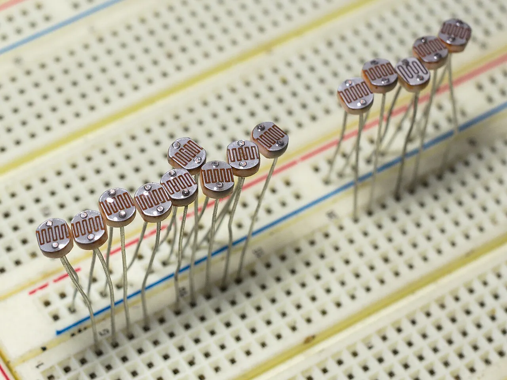

01
系統長什麼樣
感測層感測
- HC-SR04 量距離
- 光敏電阻 量亮度
- 旋鈕 選模式
腳位訊號
控制層判斷・執行
ESP32
- 判斷狀態
- 有源蜂鳴器 警報
- 狀態燈 提示
Wi-Fi 或 USB 序列埠
應用層紀錄・傳送
ESP32 自己
Wi-Fi
- 寄 Gmail
- 內建網頁
- LINE、Telegram、Discord、Google 試算表
電腦上的 Python
USB 或 Wi-Fi
- 寄 Gmail
- 存 CSV 紀錄
- 和 Uno 版同一支程式
- 感測層：量距離和亮度，讀旋鈕的位置。
- 控制層：板子判斷現在是什麼狀態、有沒有人闖入，控制蜂鳴器和狀態燈。
- 應用層：把事件寄到 Gmail、存成紀錄。這一層可以放在 ESP32 上，也可以像 Uno 版一樣放在電腦上。
02
這四個零件能防什麼
門口
HC-SR04 裝在門框一側，對著另一側。平常量到的是到對面的距離；有人經過時距離突然變短，就判定有人。
抽屜或盒子
光敏電阻放在裡面。關著的時候是暗的，被打開就變亮。
- 旋鈕：當模式開關。轉到左、中、右三段，分別是「撤防」「測試」「布防」。
- 有源蜂鳴器與狀態燈：警報與狀態提示。30 腳板在 GPIO 2 有板載 LED；38 腳板不一定有，沒有就外接一顆 LED 和 220 Ω 電阻。
這組零件做不到的
- 只看得到 HC-SR04 正前方大約 15 度的範圍，從旁邊繞過就偵測不到。
- 沒有門窗開關和人體紅外線感測器，窗戶和其他房間都沒有保護。
- 旋鈕誰都能轉。真正的系統用密碼鍵盤、感應卡或手機撤防。
- 斷電整個系統就停止。
03
零件與限制

HC-SR04 超音波測距
量測範圍約 2 cm – 4 m・感測角度約 15°・兩次量測至少間隔 60 ms
- 用途
- 量到前方物體的距離。
- 接法
- 要接 5V 供電。Echo 腳輸出 5V，要先用 1 kΩ 和 2 kΩ 電阻分壓成約 3.3V，再接到 ESP32。
- 限制
- 衣服、窗簾這類軟的材質會吸收聲波；斜面會把聲波彈開，量不到或讀值亂跳；偶爾會讀到 0 或最大值，要連續量幾次取中間值。兩個 HC-SR04 放太近會互相干擾。

光敏電阻
越亮電阻越小・和 10 kΩ 電阻串成分壓後讀類比值
- 用途
- 量亮度。
- 接法
- 一腳接 3V3，另一腳接 GPIO 34，GPIO 34 再經 10 kΩ 電阻接 GND。越亮讀值越大。
- 限制
- 讀值跟著環境光變化，白天、晚上、開燈都不同，門檻要在現場校正。房間全暗時打開盒子，亮度沒有變化，偵測不到。
- 模組版
- 如果買的是光敏電阻模組（有 AO、DO 腳）：AO 是類比值；DO 只有亮、暗兩種，靈敏度用模組上的小旋鈕調。

旋鈕（可變電阻）
讀值 0–4095
- 用途
- 讀旋鈕轉到哪裡。本專案拿來當模式開關。
- 接法
- 兩側的腳分別接 3V3 和 GND，中間腳接 GPIO 35。不能接 5V。轉的方向和讀值相反時，把兩側的腳對調。
- 限制
- 讀值會小幅跳動，停在兩段交界時模式會來回切換，交界要留緩衝區。ESP32 的讀值在最兩端不是線性的，三段的分界不要放在兩端。任何人都能轉。

有源蜂鳴器
通電就響・只有一個音高
- 用途
- 警報聲。
- 分辨
- 有源蜂鳴器通常比較高，底部用黑膠封住；長腳是正極。買的時候看清楚品名是「有源」。
- 接法
- 正極接 GPIO 23，負極接 GND。3.3V 驅動時聲音比較小。
- 限制
- 不能改音調，用 tone() 只會發出破音。如果買到的是三腳蜂鳴器模組，有些是「低電位觸發」：腳位輸出 LOW 才會響。這種模組的 VCC 接 5V 時，ESP32 輸出的 3.3V 關不掉它，會一直響，要把模組的 VCC 改接 3V3。
另外需要
- 麵包板、杜邦線
- USB 資料線（要能傳資料，不是只能充電的線）
- 10 kΩ 電阻 1 顆（光敏電阻分壓）
- 1 kΩ 電阻 1 顆、2 kΩ 電阻 1 顆（HC-SR04 Echo 分壓；沒有 2 kΩ 可以用兩顆 1 kΩ 串聯）
- 38 腳板沒有板載 LED 時：LED 1 顆、220 Ω 電阻 1 顆
04
接線
30 腳和 38 腳哪裡不一樣
- EN
- VP
- VN
- 光敏D34
- 旋鈕D35
- D32
- D33
- D25
- D26
- D27
- D14
- D12
- D13
- GNDGND
- HC-SR04 5VVIN
- D23蜂鳴器
- D22
- TX0
- RX0
- D21
- D19Echo
- D18Trig
- D5
- TX2
- RX2
- D4
- D2LED
- D15
- GNDGND
- 3V33V3
- 3V33V3
- EN
- VP
- VN
- 光敏IO34
- 旋鈕IO35
- IO32
- IO33
- IO25
- IO26
- IO27
- IO14
- IO12
- GNDGND
- IO13
- SD2
- SD3
- CMD
- HC-SR04 5V5V
- GNDGND
- IO23蜂鳴器
- IO22
- TX
- RX
- IO21
- GND
- IO19Echo
- IO18Trig
- IO5
- IO17
- IO16
- IO4
- IO0
- IO2LED
- IO15
- SD1
- SD0
- CLK
本專案用到的訊號腳本專案用到的電源接著快閃記憶體，不能用
- 兩種板子用的是同一顆 ESP32，程式完全一樣；差在排針怎麼排。
- 38 腳板多出 8 支：GPIO 6–11 六支（接在板子內部的快閃記憶體上，不能用）、GPIO 0（開機模式腳）和一支 GND。
- 同一支 GPIO 在兩種板子上的位置不同，電源腳也不同：30 腳板的 3V3 在右下角、VIN 在左下角；38 腳板的 3V3 在左上角、5V 在左下角。
- 板子上印的名稱也不同：30 腳板印 D18，38 腳板印 IO18，指的都是 GPIO 18，程式裡寫 18。
- 38 腳板比較寬，插在一般麵包板上，一側可能沒有孔可以接線。可以用兩塊麵包板並排，或買 38 腳專用的擴充底板。
- 板載 LED：30 腳板通常在 GPIO 2 有一顆藍色 LED；Espressif 原廠的 38 腳板只有電源燈。
市面上還有其他排法的 30 腳、38 腳板。接線一律以板子上印的名稱為準，不要數第幾支腳。
接線表
先把 3V3 和 GND 接到麵包板的電源排；5V 只給 HC-SR04 用。所有 GND 在板子內部是相通的，接哪一支都可以。
| 零件 | 零件的腳 | GPIO | 30 腳板 | 38 腳板 |
|---|---|---|---|---|
| HC-SR04 | VCC | — | VIN | 5V |
| HC-SR04 | GND | — | GND | GND |
| HC-SR04 | Trig | 18 | D18 | IO18 |
| HC-SR04 | Echo | 19 | 經 1 kΩ 接 D19；D19 再經 2 kΩ 接 GND | 經 1 kΩ 接 IO19；IO19 再經 2 kΩ 接 GND |
| 光敏電阻 | 一腳 | — | 3V3 | 3V3 |
| 光敏電阻 | 另一腳 | 34 | D34，再經 10 kΩ 接 GND | IO34，再經 10 kΩ 接 GND |
| 旋鈕 | 一側 | — | GND | GND |
| 旋鈕 | 中間 | 35 | D35 | IO35 |
| 旋鈕 | 另一側 | — | 3V3 | 3V3 |
| 有源蜂鳴器 | 正極（長腳） | 23 | D23 | IO23 |
| 有源蜂鳴器 | 負極 | — | GND | GND |
| 狀態燈 | LED | 2 | 板載 LED，不用接線 | IO2 → 220 Ω → LED 長腳，LED 短腳接 GND |
為什麼選這幾支腳：GPIO 34、35 屬於 ADC1，開著 Wi-Fi 也能讀類比值；18、19、23 不是開機模式腳，接了零件也不影響開機和燒錄。
05
系統怎麼判斷
撤防
蜂鳴器不響・燈滅
- 旋鈕轉到「布防」
離開倒數 10 秒
每秒短嗶一聲・燈慢閃
- 倒數結束，量一次基準值
布防
燈每 2 秒閃一下
- 距離變短，或盒子裡變亮
進入倒數 10 秒
每秒短嗶兩聲・燈快閃
- 倒數結束還沒撤防
警報
蜂鳴器連續響・燈恆亮・送出通知
任何時候把旋鈕轉到「撤防」，都會回到撤防。
旋鈕停在中間的「測試」：只送出讀值，偵測到就亮燈，蜂鳴器不響。
- 基準值：布防那一刻量一次 HC-SR04 到對面的距離和盒子裡的亮度，之後跟基準比較，變化超過門檻才算偵測到。
- 進入倒數：讓主人有時間把旋鈕轉回撤防；倒數結束還沒撤防，才進入警報。
要先決定的事
- 斷電再通電之後，要回到斷電前的狀態，還是一律從撤防開始？
- 旋鈕和遠端（電腦、網頁、訊息）都能改狀態時，以誰為準？
- 警報要響多久？響完要自動回到布防嗎？
06
通知怎麼送出去
| 路線 | 怎麼運作 | 需要 |
|---|---|---|
| A｜只靠 ESP32 | 偵測、倒數、蜂鳴器全部在 ESP32 上完成，不會通知任何人。 | ESP32 和電源 |
| B｜接電腦，Python 當閘道 | 和 Uno 版一樣：ESP32 從 USB 序列埠送出事件，電腦上的 Python 讀到後寄 Gmail、存紀錄。同樣的事件格式、同一支 Python 程式。不想接 USB 線時，ESP32 也可以用 Wi-Fi 把事件送給電腦上的 Python。 | 一台一直開著的電腦、Python 3、pyserial |
| C｜ESP32 自己上網 | ESP32 連上 Wi-Fi，直接寄 Gmail；也可以開一個網頁讓同網路的手機看狀態，或直接送 LINE、Telegram、Discord、Google 試算表。 | 2.4 GHz Wi-Fi |
路線 B 和 C 怎麼選
| 路線 B：電腦上的 Python | 路線 C：ESP32 自己上網 | |
|---|---|---|
| 電腦 | 要一直開著，不能休眠 | 不需要 |
| 帳號密碼放在哪 | 電腦上的設定檔 | 燒進 ESP32 的程式裡 |
| 改通知內容 | 改 Python 就好，不用重新燒錄 | 要重新燒錄 |
| 拍照 | 可以用電腦的攝影機 | 經典款 ESP32 沒有相機 |
| 斷網時 | 警報照響；Python 可以先存著，網路恢復再寄 | 警報照響；寄信失敗要自己寫重試 |
| 現場 Wi-Fi | 電腦能上網就行 | 只能連 2.4 GHz、不需要網頁登入的網路 |
事件格式
ESP32 和 Python 之間先約定好每一行文字的意思。格式和 Uno 版相同，所以同一支 Python 程式兩種板子都能用。
| 方向 | 送出的文字 | 意思 |
|---|---|---|
| 板子 → 電腦 | HB | 每 5 秒一次，表示板子還在運作 |
| 板子 → 電腦 | STATE,ARMED | 狀態改變；後面是新的狀態：DISARMED、TEST、EXIT、ARMED、ENTRY、ALARM |
| 板子 → 電腦 | DETECT,DIST／DETECT,LIGHT | 哪一個感測器偵測到 |
| 板子 → 電腦 | READ,118,640,2050 | 測試模式的讀值：距離（cm）、亮度、旋鈕 |
| 電腦 → 板子 | STATUS | 要板子回報目前狀態 |
| 電腦 → 板子 | MUTE | 讓蜂鳴器停止，狀態不變 |
這是框架階段的提案，寫程式前可以再調整。
主線：Gmail
- 準備一個 Gmail 個人帳號，建議另外開一個專門寄通知的帳號。
- 到 Google 帳戶的安全性設定，開啟兩步驟驗證。
- 建立「應用程式密碼」（16 個字元）。程式用這組密碼登入，不是用你的 Gmail 密碼。
- Python 或 ESP32 透過 smtp.gmail.com 寄信。
學校或公司的 Google 帳號，管理員可能關閉了應用程式密碼，請改用個人帳號。
其他服務
預設全部都可以用，範例程式碼會分開提供。
| 服務 | 要準備 | 限制 |
|---|---|---|
| Gmail | 應用程式密碼 | 信件可能延遲或被歸到垃圾郵件；每天有寄信上限 |
| LINE Messaging API | LINE 官方帳號、Channel access token、自己的 User ID | 免費方案每月 200 則；要讓板子接收 LINE 指令，需要一個公開的 HTTPS 網址。LINE Notify 已在 2025 年 3 月 31 日停止服務，網路上用它的舊教學都不能用 |
| Telegram Bot | 用 BotFather 建立機器人，取得 token 和 chat ID | 免費；可以傳照片，也可以接收指令 |
| Discord Webhook | 在頻道設定裡建立 Webhook 網址 | 設定最簡單；網址外流的話，任何人都能用它發訊息 |
| Google 試算表 | 用 Apps Script 部署成網頁應用程式 | 適合存紀錄，不適合即時通知 |
| 網頁儀表板 | ESP32 內建網頁伺服器，或電腦上的 Flask | 只有同一個網路裡的裝置看得到 |
07
用 AI 一段一段做
一次只做一段，這一段測過了再往下。每一段都問同樣四件事。
階段 1
每個零件單獨測
- AI 能幫你
- 寫只讀一個零件的測試程式，把讀值印到序列埠監控視窗。
- 你要準備
- 板子型號（30 腳或 38 腳）、本頁的接線表；Arduino IDE 已安裝 ESP32 開發板套件，並能燒錄（先燒範例 Blink 確認）。
- 怎麼測試
- HC-SR04：用捲尺對照 30 cm、100 cm 時的讀值。
- 光敏電阻：用手遮住、用手機手電筒照，看讀值往哪邊變。
- 旋鈕：從頭轉到尾，記下讀值範圍。
- 蜂鳴器：輸出 HIGH 一秒，確認會響。
- 常見陷阱
- 距離一直是 0：Trig、Echo 接反，或零件沒有和板子共用 GND。
- 序列埠監控視窗的鮑率和程式不同，畫面全是亂碼。
- 類比讀值一直是 0 或 4095：接到 ADC2 的腳，或把旋鈕接到 5V。
- 燒錄失敗：有些板子要按住 BOOT 鍵才開始上傳。
階段 2
狀態與警報
- AI 能幫你
- 依第 05 節的狀態圖寫出狀態判斷；加上「連續量幾次取中間值」和「旋鈕交界緩衝區」。
- 你要準備
- 第 05 節的狀態圖、倒數秒數、觸發門檻，以及「要先決定的事」的答案。
- 怎麼測試
- 每個狀態都走一次，確認燈號和蜂鳴器符合狀態圖；用序列埠監控視窗看狀態切換的紀錄。
- 常見陷阱
- AI 用 delay() 做倒數和嗶聲，倒數時轉旋鈕沒有反應。
- 布防那一刻剛好有人站在前面，基準值量錯。
階段 3
送出通知
- AI 能幫你
- 路線 B：和 Uno 版相同的 Python 程式。
- 路線 C：寫 ESP32 連 Wi-Fi、用 smtp.gmail.com 寄信；斷線自動重連；寄信失敗重試。
- 你要準備
- 路線 B：Python 3 和 pyserial、Gmail 應用程式密碼、板子的序列埠名稱。
- 路線 C：2.4 GHz Wi-Fi 的名稱和密碼（或手機熱點）、Gmail 應用程式密碼。
- 怎麼測試
- 先寫一支只寄一封信的程式；再關掉 Wi-Fi 觸發警報，確認蜂鳴器照響，序列埠印出寄信失敗。
- 常見陷阱
- AI 給的程式用 setInsecure() 跳過憑證檢查：能寄出去，但連線沒有驗證對方。
- Wi-Fi 密碼和應用程式密碼寫在程式裡，截圖或上傳 GitHub 就外洩。
- Wi-Fi 斷線後沒有重連，之後的警報都寄不出去。
- 打開序列埠時 ESP32 可能會重新開機。
階段 4
整合與長時間測試
- AI 能幫你
- 整理測試清單，分析紀錄檔裡的誤報。
- 你要準備
- 第 08 節的驗收表。
- 怎麼測試
- 讓系統連續跑一整晚，隔天看紀錄和心跳有沒有中斷。
- 常見陷阱
- Wi-Fi 發射時電流突然變大，供電不足就重新開機。
- 路線 B 的電腦自動休眠，通知中斷。
08
測試與驗收
| 項目 | 怎麼做 | 記錄什麼 |
|---|---|---|
| 漏報 | 用平常的速度走過門口 10 次 | 觸發幾次 |
| 漏報 | 側身快速通過、穿厚外套通過，各 5 次 | 觸發幾次 |
| 誤報 | 布防後讓空房間放 1 小時 | 誤觸發幾次 |
| 誤報 | 開關房間的燈、拉窗簾 | 光敏電阻有沒有誤觸發 |
| 撤防 | 觸發後 10 秒內把旋鈕轉回撤防 | 有沒有響、有沒有寄信 |
| 通知 | 觸發一次完整警報 | 幾秒後收到信、收到幾封 |
| 斷網 | 關掉 Wi-Fi 後觸發 | 蜂鳴器有沒有響、有沒有發現通知失敗 |
| 斷電 | 布防中拔電再插回 | 回到什麼狀態 |
| 長時間 | 連續運作 8 小時 | 有沒有當機、心跳有沒有中斷 |
誤報太多，使用的人會把系統關掉；漏報太多，系統就沒有用。調門檻時兩個數字要一起看。
09
什麼情況下會失效
「我做的東西在什麼狀況下會翻車？」
第 07 節的常見陷阱發生在開發時；這一節是系統裝好以後，在真實情況下會失效的地方。
感測層
- 有人從 HC-SR04 照不到的角度進來：不會觸發。
- 穿厚外套或抱著棉被經過：聲波被吸收，量不到。
- 房間全暗時打開盒子：亮度沒有變化，光敏電阻不會觸發。
- 陽光照進來，或有人開燈：光敏電阻誤觸發。
控制層
- 闖入的人把旋鈕轉到撤防：系統不再偵測。
- 拔掉電源：整個系統停止；重新通電後回到撤防。
- 程式卡住：蜂鳴器不響，也不會通知。
應用層
- Wi-Fi 斷線或路由器重開機：通知送不出去。ESP32 只能連 2.4 GHz 的 Wi-Fi。
- 走路線 B 時，電腦休眠、關機，或 USB 線鬆脫：電腦收不到事件，不會送出通知。
- 網路斷了：通知送不出去。「沒收到通知」不代表「沒有人闖入」，要靠心跳訊號發現系統離線。
- Gmail 信件延遲，或被歸到垃圾郵件：主人沒有即時看到通知。
- 誤報太多：寄出大量信件，收信的人開始忽略通知。
- 應用程式密碼外洩：別人可以用這個帳號寄信。
10
範例程式碼
框架確認後補上
- alarm_esp32.ino路線 A＋B：和 Uno 版用同一套事件格式
- alarm_esp32_wifi.ino路線 C：ESP32 自己寄 Gmail、開網頁
- gateway.py和 Uno 版共用
- 延伸LINE、Telegram、Discord、Google 試算表